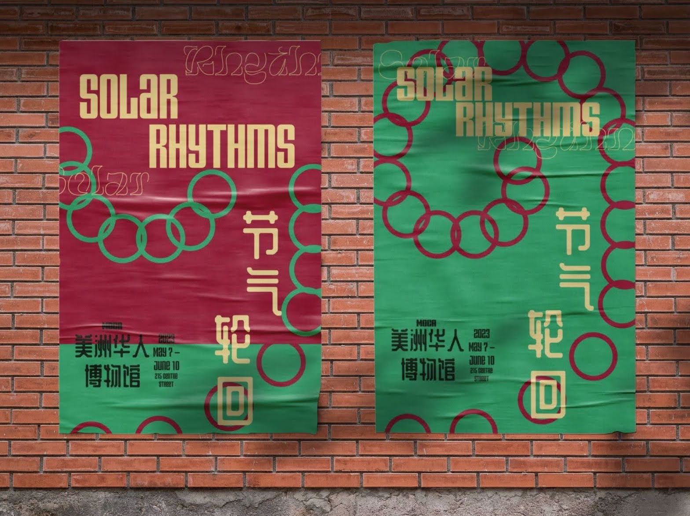

❮


 ❯
❯
OPEN (A Publication on the Flashing Lights of NYC) (2023)
Publication Design
Publication Design
The visual footprint of dot-matrix LED signs rings through the city. Not quite as striking as analogue vintage neon and yet not quite modern enough to be of the digital age. An ode to the dot matrix LED.
OPEN (The Online Experience)
(2023)
Website Design
(2023)
Website Design
A counterpart to the OPEN publication through a digital lens. An exploration of LED motion, color, and textures in a playful and true to form translation. The overwhelming nature of an LED filled city is preserved with an early web reminiscent style.

Solar Rhythms (2022)
Visual Identity
Poster Design
Motion Graphic
Visual Identity
Poster Design
Motion Graphic
How can we bring centuries of Chinese culture and connotations into modern day design? This is a hypothetical art exhibition centering the theme of the 24 seasonal cycle in traditional Chinese culture. It uses the circle as the central motif and a playful take on repetition.
Keeping Time (2023)
Publication Design
Editorial Design
Publication Design
Editorial Design
Inspired by the commonplace lunisolar calendar seen in many Chinese households. Analyzing the various ways different cultures and beliefs have measured and kept track of time. The few notable measurements being seasonal, holidays, and the sun/moon.